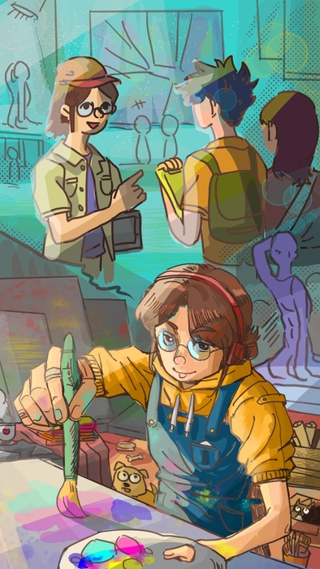
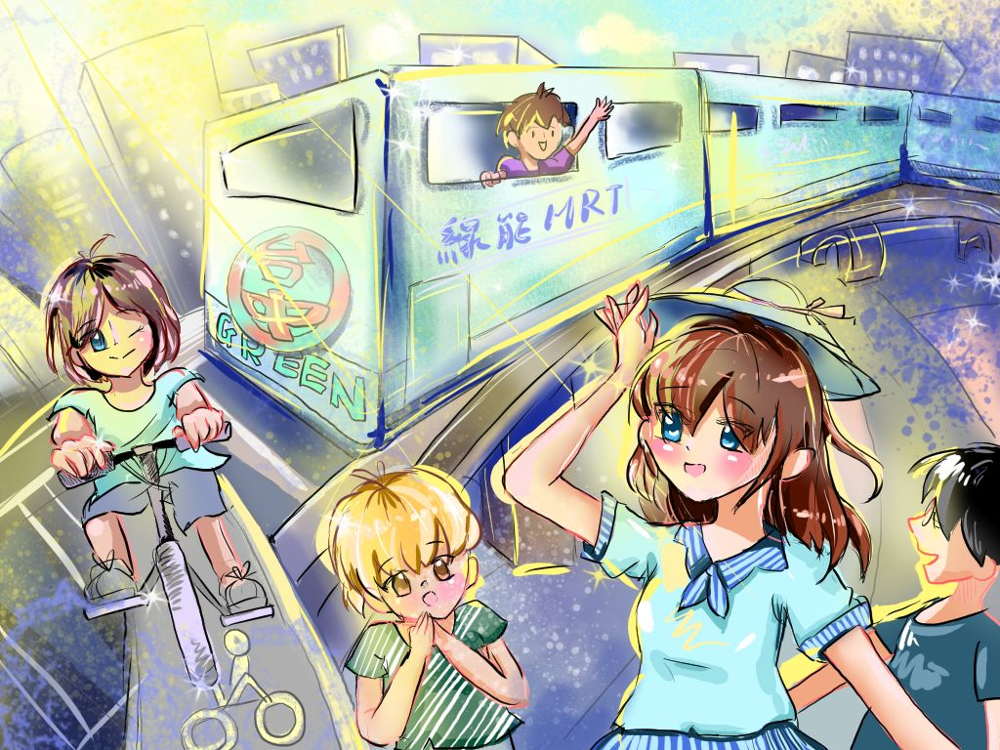
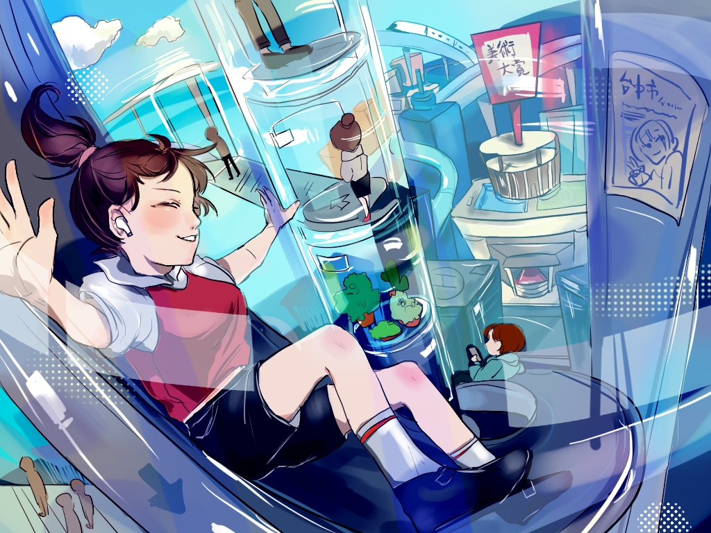
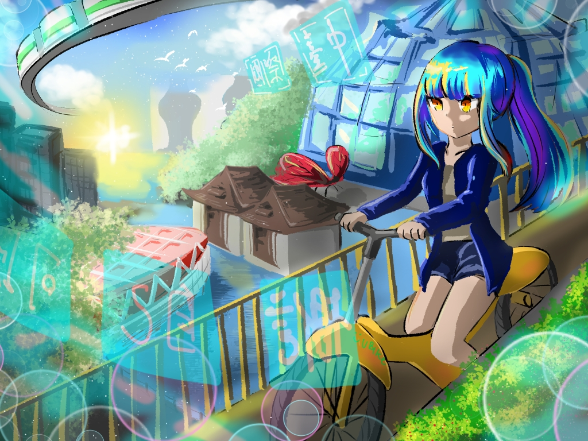
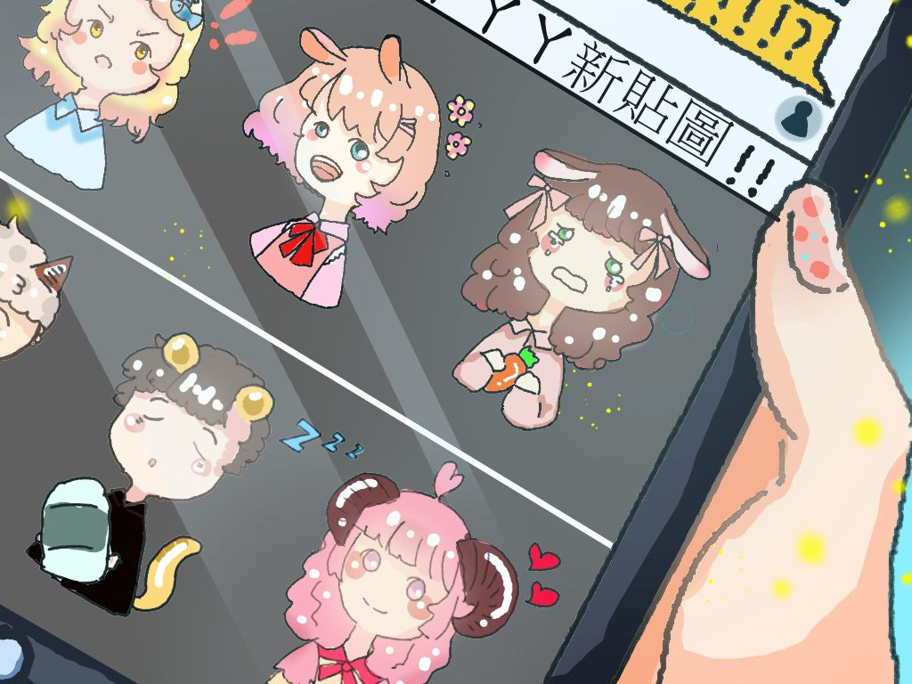
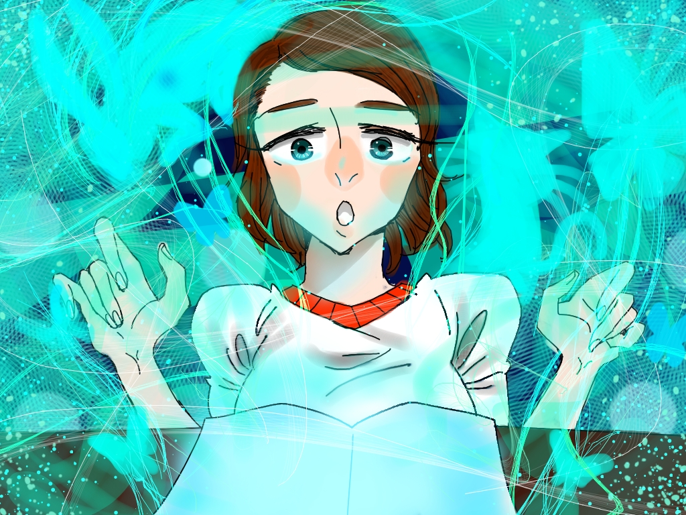
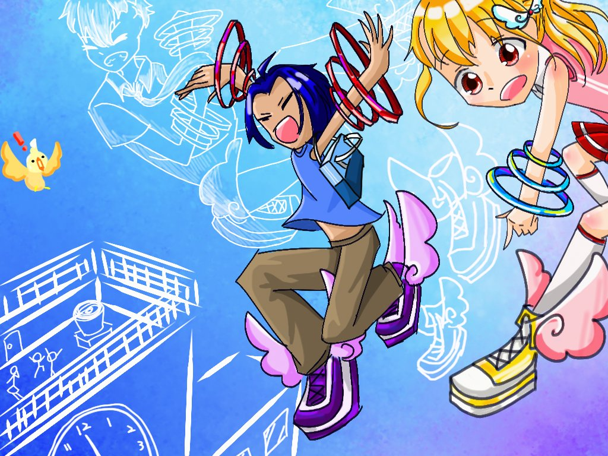
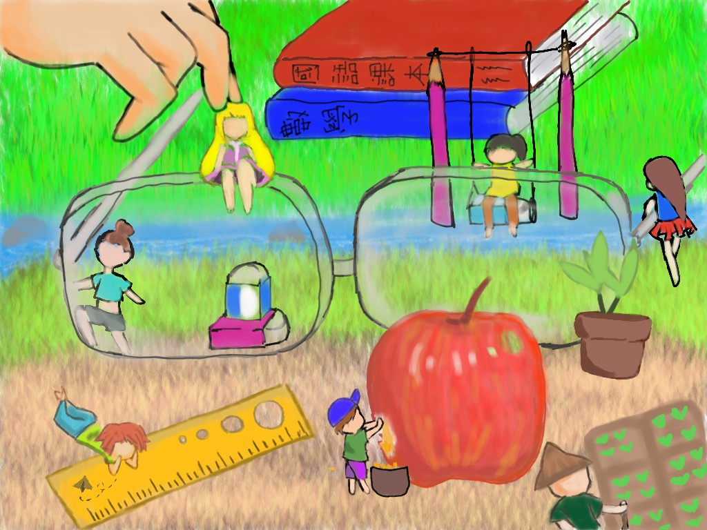

得獎作品分析 × 練習計畫 × 時間管理 × 評分攻略
以下針對11張歷年特優得獎作品逐一分析，歸納出風格、構圖、技法、主題四個維度的特徵。 讀完後你會發現：得特優的作品並不是「畫得最精細」，而是「主題清楚＋構圖有層次＋色彩協調」。








每張圖你在3秒內就知道「在講什麼」。主題要明確，不要讓評審猜謎。
對應：主題性 25%或是視角特別（仰角/截圖視角），或是比例反差（縮小人），或是技法對比（白描＋彩繪）。每張圖都有「只有這張才有」的東西。
對應：原創性 30%所有得獎作品都有層次感。不是把人物放在空白背景上——背景有場景，中景有細節，前景有主角。
對應：電腦技法 30%不是「五顏六色」，而是有1-2個主色統領全圖（藍色系、暖棕色、青綠色）。主色決定畫面氣氛。
對應：美術技法 15%⚠️ 絕對不能讓上傳時間不夠——11:50前必須完成作品
比賽時題目現場公布，考驗的是「快速構思 → 轉化為畫面 → 在時間內完成」的能力。 練習重點是訓練每次都用相同的五步驟流程： 構思（想創意點）→ 草稿（確認層次）→ 線稿→ 上色 → 特效收尾。 每次練習都要嚴格計時，養成時間感。
7vqkwsgjrhwn66qccvykscxbh9w2fcsz3jx2w5db8pj8u58hkzdfwbw6